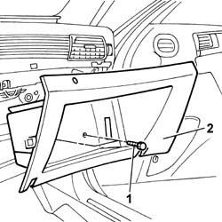

7040A31 Compartment in dashboard - R.R.
- Path
- Procedures > 70 FITTINGS > 7040 BODY INTERIOR UPHOLSTERY AND TRIM > 7040A PASSENGER COMPARTMENT TRIMS > 7040A31 Compartment in dashboard - R.R.
- Kind
- repair procedure (removal / refitting; the operation number is the code)
- Applies to
- all engines; all production periods
- Interactive page
- https://sloeber94.github.io/elrnDB-lThss/en/#/126593
Applies to: all engines; all production periods
 Removing
Removing
 Refitting
Refitting- Open the boot and disconnect the negative battery terminal.
- Open the compartment flap.
See in Op. 7040G20 GLOVE COMPARTMENT BULB HOLDER IN DASHBOARD
- [7040G20]
1. Undo the bolts fixing the compartment.
2. Remove the compartment from the dashboard.

Applies to: all engines; all production periods
Refitting
RemovingSee in Op. 7040G20 GLOVE COMPARTMENT BULB HOLDER IN DASHBOARD
- [7040G20]
- Fit the compartment tightening the fixing bolts.
- Connect the negative battery terminal.
Topics linked from this page (1)
Topics that link to this page (18)
- 5010B56 Duct between climate control casing and air duct to rear seats - R.R.
- 5010D27 UPPER MIXED AIR TEMPERATURE SENSOR (one) left or right - R.R. following electrical circuit check
- 5010D28 LOWER MIXED AIR TEMPERATURE SENSOR (one) left or right - R.R. following electrical circuit check
- 5040C10 Air conditioning CASING - R.R.
- 5040D86 air conditioner right air mixture flap control motor - r r
- 5040D94 Air conditioning upper left air distribution flap control motor (DEFROST) - R.R.
- 5040D96 Air conditioning upper right air distribution flap control motor (DEFROST) - R.R.
- 5505C26 ENGINE COMPARTMENT built in wiring - R.R.
- 5505C31 Under-FACIA WIRING - R.R.
- 5505C41 PASSENGER COMPARTMENT built in WIRING - R.R.
- 5580C22 AIR BAG MODULE (passenger side) - R.R.
- 7040A10 Instrument facia TRIM - R.R.
- 7040A14 Glove compartment FLAP in dashboard - R.R.
- 7040A19 RIGHT dashboard LOWER TRIM - R.R.
- 7040A42 Motor for opening/closing glove compartment flap in dashboard - R.R.
- 7040A95 Left or right reinforcement crossmember (one), dashboard and bodyshell supporting crossmember - R.R.
- 7040G24 Glove compartment light SWITCH - R.R.
- 7040L17 Passenger compartment front floor carpet - R.R.